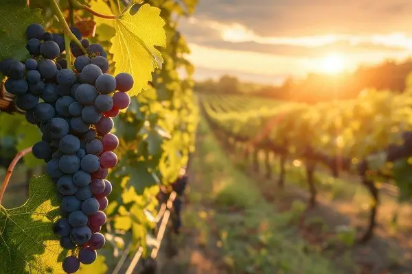
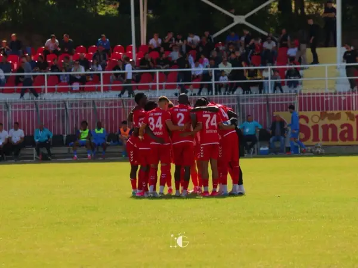
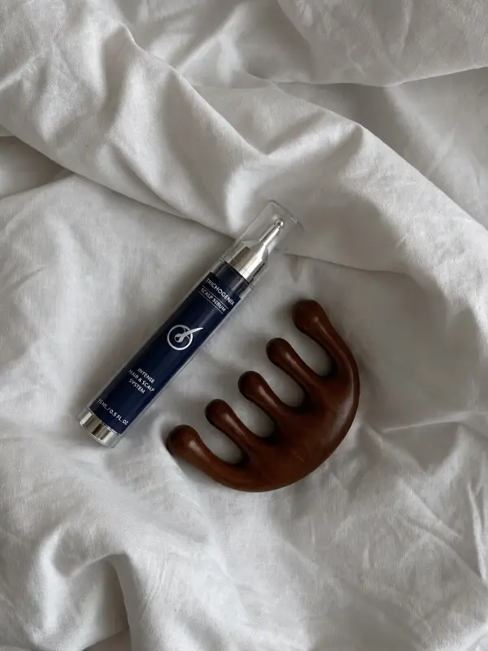
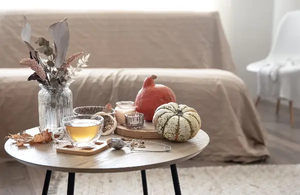
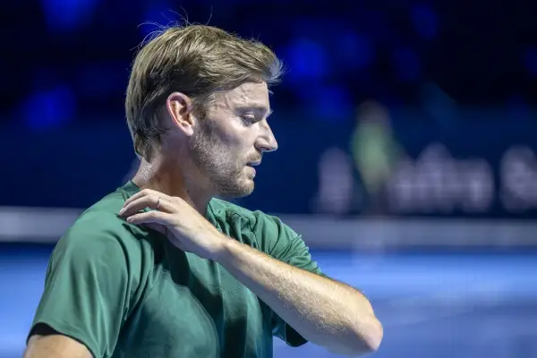

Day.mk - Најнови Вести (Страница 394)
Во Софија смртно застрелан бизнисменот Бинев, поранешен пратеник и европратеник
Полицијата категорично ја отфрла верзијата за нарачано убиство. Неговата политичка активност официјално започна во 2007 година, кога беше избран за европратеник од листата на па...
Огромен одѕив во Војводина, најголем во Нови Сад: Пријавени сомнежи за купување гласови и изборни неправилности
Според податоците на Градската изборна комисија, на кои се повикуваат локалните медиуми, до 14 часот во Нови Сад гласале речиси 50 отсто од запишаните избирачи.

Чаша вино за здраво срце: Дали е вистина или само убава приказна
Речиси секој го има слушнато: чаша црвено вино на ден е добра за срцето.

Победи за Тиквеш и за Брегалница
Колото ќе биде комплетирано утре со натпреварите: Табела: Шкендија 24 бода, Струга 23, Вардар 21, Тиквеш 20, Силекс 16, Шкендија Арачиново 14, Брегалница 13, Арсими 10, Башкими ...

Косата ви се проретчува? Еве што навистина можат да направат ампулите
Ампулите најчесто содржат концентрирани формули за нега на скалпот.

Tри фенг шуи совети за есенско освежување на домот
Есенските детали не само што го збогатуваат просторот, туку создаваат и чувство на домашна удобност и хармонија, зошто сезоната обезбедува изобилство од природни материјали што ...
Британско МВР: Употребата на кокаин во Англија зголемена за 26 отсто од 2021 година
Полицијата евидентирала најмалку 29. кривични дела поврзани со кокаин во 2025 година, што е 63,4 случаи на 100. Речиси шест од 10 полициски тестови за дрога спроведени врз лица ...
Мила Петрушевска избрана за претседателка на Клубот на млади на ЗНАМ
Формирањето на Клубот на млади е дел од Акцискиот план на ЗНАМ, со јасна цел, создавање организиран, активен и функционален младински подмладок, во кој младите ќе имаат простор ...
Приведен маж од скопско за брутален напад врз сопругата
Според полициските информации, инцидентот се случил на 24. година, во 18:35 часот, кога полициски службеници од СВР Скопје го лишиле од слобода Н. Ј. Тој се сомничи дека со упот...

Гофан во солзи се прости од тенисот
Пред сè, сакам да им се заблагодарам за сите овие видеа и на сите луѓе што се појавија во нив – моите пријатели, семејството и противниците. Сакам да им се заблагодарам на сите.
Најнови Вести